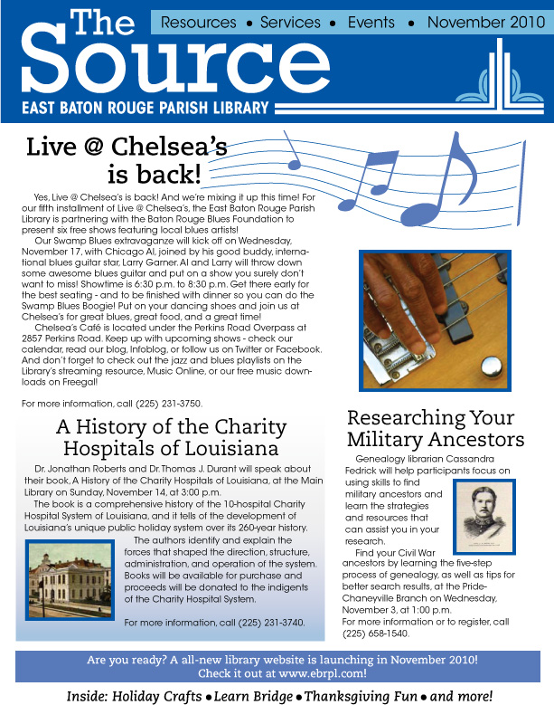
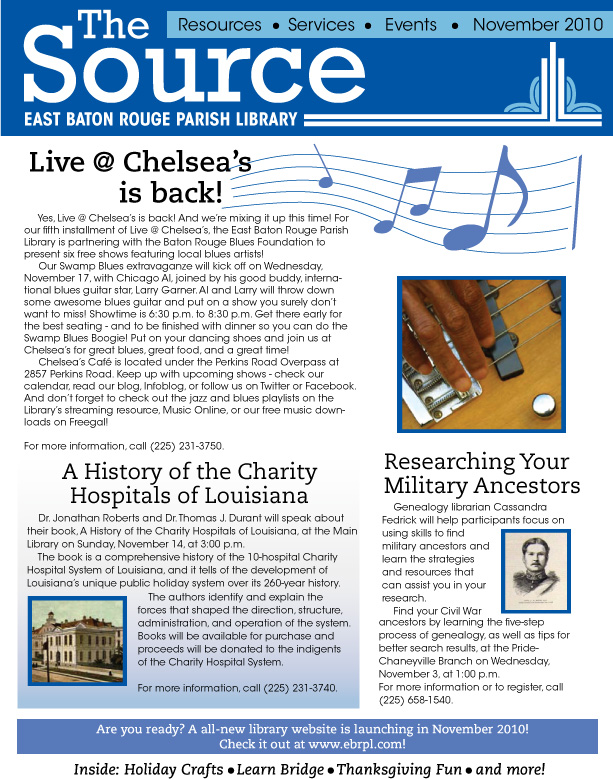

A brand redesign created for the East Baton Rouge Parish Library system. As part of a team, we worked to establish a fresh look for the library system. We first redesigned their logo, then developed a system of stationary, as well as designed new signage for navigating bookshelves. We were also tasked with designed an ad campaign targeted towards Millenials that the East Baton Rouge Parish Library used on Louisiana State University's Baton Rouge campus, and to specifically highlight their new "Text a Librarian" application. Next, we rebranded and updated the design of their website and blog. We also created brand new templated for their monthly newsletter.